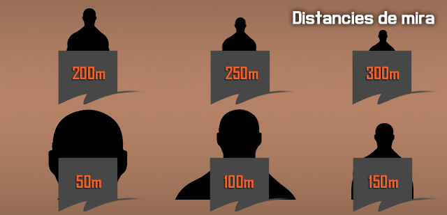

Prioritzar i atacar objectius a diferents distàncies
En un escenari de combat ets pots trobar enemics a diferents distàncies, i has de saber com disparar amb efectivitat a cada distància, i saber quins objectius has d'atacar abans que els altres. Prioritzar l'amenaça i atacar-la de forma efectiva és vital per guanyar el combat.
Distàncies
Existeixen pel soldat d'infanteria tres distàncies bàsiques: curta, mitja i llarga distància. Saber diferenciar entre elles i actuar segons correspongui facilitarà abatre els enemics.
- Curta distància és fins a 50m.
- Mitja distància és de 50 a 200m.
- Llarga distància és a partir de 200m.
Aquest sistema dóna una referència ràpida a tota la unitat de la distància aproximada dels contactes albirats.
Els fusells per regla general solen estar ajustats a un rang zero de 300m, per tant tot el que sigui m és enllà del rang zero, es comença a considerar un tret difícil.
Hi han diferents sistemes per determinar la distància a l'objectiu, des dels més bàsics com fer servir la pròpia mira de l'arma, als mes avançats com els Telèmetres.
Calcular distàncies amb la mira
Per poder calcular la distància amb la mira, t'has de fixar en la mira davantera. Si la punta de la mira fa d'amplada igual que el cap de l'objectiu, és que és a 50m. Si fa una mica m és del cap, són 100m. Si la punta ocupa tota l'amplada de les espatlles de l'objectiu, són 150m. Si fa 1/4 més de l'amplada del cos, són 200m. Si fa 1/3 més de l'amplada del cos, són 250m. I si fa la meitat més de l'amplada del cos, són 300m. En aquesta imatge s'explica millor.

Prioritzar objectius
Quan estiguis en combat, hauràs de saber identificar les majors amenaces segons la distància, ja que no representa el mateix perill un fuseller enemic a 20m que a 150m.
Segons rol
Abans de saber com prioritzar per distància, has de saber quins rols de soldat representen una amenaça més gran, de més a menys. Constatar que només parlem d'infanteria, i de nivell d'amenaça, no de preferència d'eliminació.
- Metrallador (Tipus M240)
- Fuseller Automàtic (Tipus M249)
- Franctirador pesat (Tipus M107)
- Franctirador lleuger (Tipus M24)
- Antitanc
- Granader
Segons distància
Les distàncies determinen quin grau d'amenaça representa un enemic i per tant quina és la reacció que cal tenir. Cal tenir present que parlem sense tenir en compte el rol de l'enemic.
| De 0 a 10m | Acció immediata, obrir foc. |
| De 10 a 100m | Acció immediata, obrir foc o cobrir-se. |
| De 100 a 300m | Acció immediata, a discreció. |
| Més de 300m | A discreció. |